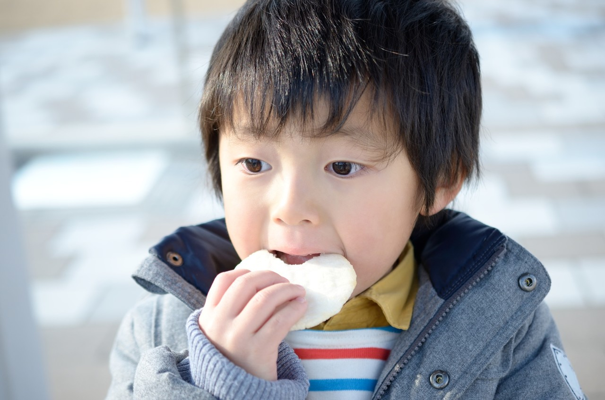

한 번의 키보다, 자라온 흐름을 봅니다.
- 01키와 체중 기록
- 02성장 속도
- 03생활과 진찰
| 구분 | 살펴볼 점 | 알려주실 내용 |
|---|---|---|
| 성장 기록 | 시간에 따른 키·체중의 변화 | 측정 날짜가 있는 기록 |
| 생활 리듬 | 식사·잠·활동의 양상 | 평소 하루의 생활 |
| 진료 상담 | 기존 검사와 성장 관련 질문 | 검사 자료와 보호자의 관찰 |
궁금한 항목을 펼쳐보세요.
필요한 설명과 자료를 주제별로 확인할 수 있습니다.
01성장과 발달을 돕습니다＋
성장과 발달을 돕습니다
놓치기 쉬운 사소한 생활습관, 학교(유치원, 어린이집 등)생활 등을 종합적으로 고려하여 약해진 부분의 균형을 채워나갑니다.
02바른 성장과 발달은 '몸과 마음이 모두 건강하게 자라는 것'입니다.＋
바른 성장과 발달은 '몸과 마음이 모두 건강하게 자라는 것'입니다.
아이와 함께 오신 모든 부모님들은 다음과 같은 질문을 자주 하십니다.
“우리 아이는 키가 얼마까지 클 수 있을까요?”
저성장에 해당하는 아이를 둔 부모의 마음은 다르지 않을 것입니다. 우리는 아이를 키우는 부모이자, 아이를 치료하는 의료진의 입장에서 아이가 내는 마음의 소리까지 귀기울입니다.
‘몸과 마음이 모두 건강하게 자라는 것’이야말로 우리가 추구하는 소아성장치료입니다.
03I 성장장애의 정의＋
I 성장장애의 정의
성장장애
체중이나 신장 등 신체성장이 연령에 비해 현저히 작은 경우, 때때로 운동장애, 사회성장애 등의 발달장애를 동반
신장와 체중을 기준으로 하는 임상적 정의
- 신장이 하위 5%이하
- 체중이 하위 10%이하
failure to gain weight (살이 찌지 않는 아이)
전체 응급실 방문 아이, 입원하는 아이의 15~25%가 체중이 적은 경우로 최근들어 주목받고 있습니다.
04I 키 성장치료는 언제?＋
I 키성장치료는 언제?
우리 아이의 단순 키 성장치를 예상하는 방법은 무엇이 있을까요?
보통 최종 성장치를 예측하는 공식은 다음과 같습니다.
- 남자아이: (엄마키+아빠키+13)/2
- 여자아이: (엄마키+아빠키-13)/2
사실 성장속도와 성장치를 결정하는 요인은 여러 가지가 있습니다. 가장 중요한 인자는 물론 부모의 인자입니다.
콩 심은데 콩나고, 팥 심은데 팥난다는 말처럼 아이들은 우리 부모의 유전자를 반반씩 물려받고 태어나며, 따라서 엄마와 아빠의 유전자의 조합은 아이의 성장치를 예측하는 중요한 지료가 됩니다.
하지만, 성장에 있어서 중요한 것은 유전인자가 전부가 아닙니다. 같은 콩을 심어도 토양과 환경에 따라 어떤 콩잎은 더 무성하고, 어떤 콩잎은 시들시들하고 작은 것이 있는 것처럼, 아이의 실제 성장 역시 토양과 환경이 중요합니다. 바로 이 부분에 보다 주목을 하여 진행하는 치료가 성장 치료이고 발달 치료입니다.
성장시기는 다음과 같습니다.
- 0~2세: 0~25cm/년
- 3세~사춘기 전: 평균 5~7cm/년 (5cm 미만의 경우 의학적 관찰이 필요)
- 사춘기: 평균 7~12cm/년 (2-3년 정도 지속)
남아의 사춘기: 12.5세~ 15세 (평균 14세 내외) 여아: 10세~13세 (평균 12세 내외) - 사춘기~청년기: 평균 1cm/년 (4~6cm 성장)
남자는 21세, 여자는 17세에 최대 신장에 도달합니다. (근육은 20대중반, 골격은 30대초반까지 증가)
05I 성장 치료는 어떤 경우에?＋
성장 평가는 기록을 함께 봅니다.
연속된 키·체중 기록과 성장 속도, 부모의 키, 사춘기 진행 상태를 함께 평가합니다. 필요한 경우 골연령 검사와 전문 진료를 안내합니다.
성장판은 뼈의 길이 성장과 관련된 조직입니다. 성장판이 닫힌 뒤에도 일정한 키 성장이 가능하다고 안내하지 않습니다.
식사·수면·운동과 동반 질환을 살펴 관리 방향을 정하며, 치료로 늘어날 키나 월별 성장량을 보장하지 않습니다.
성장 부진
성장 하위 25%미만(키, 몸무게 등)
연간 5cm 미만으로 성장하는 경우
급격한 성장장애가 우려되는 경우
성조숙증 우려
부모세대 보다 성장시기가 앞당겨짐
초경은 과거 중고등학생이었지만
지금은 초4-5학년으로 낮아짐
알러지 혹은 비만
비염 천식 아토피등의 알러지 질환
체지방률이 높은 경우 등은 성장, 성
르몬의 교란을 일으키기 쉬움

아이와 진료 오기 전, 함께 챙겨주세요.
집에서 본 아이의 모습
가장 불편한 점과 시작한 때, 식사·잠·활동에서 달라진 모습을 알려주세요.
검진 기록과 복용약
가지고 있는 성장·검진 기록, 검사 결과와 약 이름을 챙겨주세요. 알레르기 이력도 함께 알려주세요.
아이도 궁금한 이야기
아이의 걱정과 보호자의 질문을 함께 나눠주세요. 이전 진료에서 어려웠던 경험도 좋습니다.
이 안내는 건강에 대한 이해를 돕는 참고 정보입니다. 증상과 질환에 대한 정확한 판단은 의료진의 진료가 필요합니다.